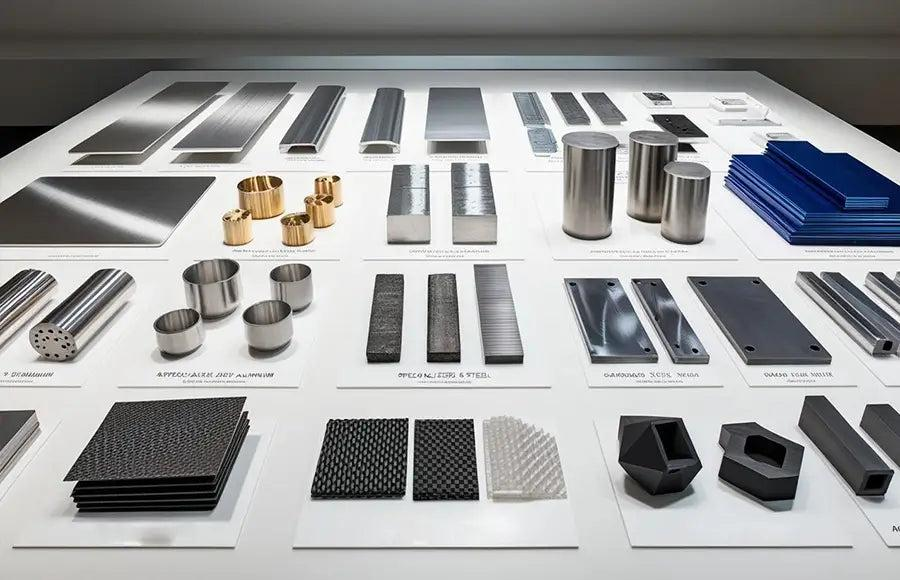
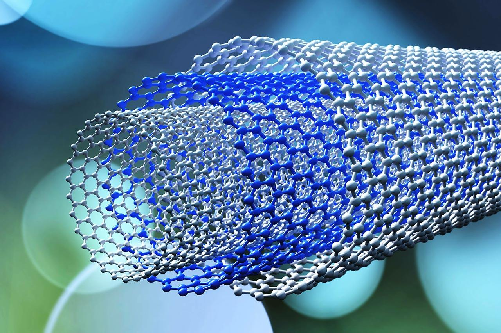
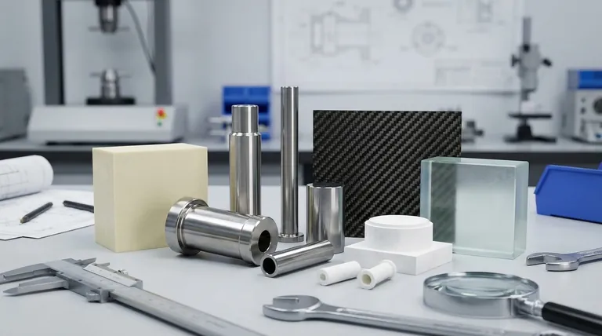

Future Paths in Material Science
Material Science is about understanding how materials behave, why they behave that way, and how they can be improved to meet the demands of modern technology.
Here are the real-world applications and future possibilities behind each topic in the module, showing how the foundation you build today shapes the innovations of tomorrow.
01. Properties of Materials

Every material has distinct properties that determine how it performs under different conditions. Understanding these properties helps us identify suitable materials for specific applications and develop solutions to engineering challenges.
Manufacturing
Identify materials that meet specific requirements for strength, durability, weight, and cost in industrial engineering.
Aerospace & Automotive
Select lightweight and durable materials for vehicles, aircraft, and spacecraft operating under extreme conditions.
Biomedical Engineering
Identify materials suitable for medical devices, implants, and other advanced healthcare applications.
Understanding material properties is the first step towards choosing, developing, and improving materials for specific purposes.
02. Atomic Structure
The behaviour of a material begins at the atomic level. Understanding atomic structure helps explain how atoms interact, bond, and influence the properties of the materials they form. Where is this knowledge used?
- Semiconductor Technology — Understand the atomic foundations of materials used in transistors, integrated circuits, and electronic devices.
- Chemistry & Chemical Engineering — Explain chemical bonding, material composition, and interactions between elements.
- Materials Engineering — Understand how atomic arrangements and bonding influence material strength, stability, and other properties.
- Nanotechnology — Explore materials and structures at the atomic and molecular scales.
- Energy Technology — Understand the materials used in batteries, solar cells, and other energy-conversion devices.
03. Crystal Structure
The arrangement of atoms within a material plays a significant role in determining its properties. Crystal structure helps explain how the microscopic arrangement of atoms influences the strength, conductivity, and behaviour of crystalline materials.
Metallurgy
Understand how the crystal structures of metals influence their strength, hardness, and ductility.
Semiconductors
Develop and manufacture highly ordered crystalline materials used in electronic components.
Optoelectronics
Develop crystalline materials used in LEDs, lasers, and optical devices based on their lattice structure.
04. Mechanical Properties
Mechanical properties describe how materials respond to forces, deformation, impact, and repeated loading. Understanding them is essential for designing products and structures that remain safe and reliable under real-world conditions.
- Civil & Structural Engineering — Design buildings, bridges, and infrastructure that can withstand different types of loading.
- Automotive & Aerospace — Develop components that withstand vibration, impact, stress, and fatigue.
- Manufacturing — Determine suitable materials and processing methods for forming, machining, and shaping components.
- Medical Device Engineering — Develop implants, prosthetics, and medical instruments that can withstand mechanical loads.
05. Electrical Properties
Electrical properties determine how materials respond to electric fields and electrical currents. They form the foundation of modern electronics, electrical systems, and many technologies used in everyday life.
Electronics
Develop transistors, integrated circuits, sensors, and other foundational electronic components.
Renewable Energy
Develop advanced materials for solar cells, batteries, and next-generation energy-storage technologies.
Advanced Research
Investigate superconductors, semiconductors, and other materials with highly specialized electrical behaviour.
06. Introduction to Nanotechnology

Nanotechnology involves understanding and manipulating materials at extremely small scales, where materials can exhibit properties that differ significantly from their larger-scale forms.
- Medicine & Healthcare — Explore targeted drug delivery, nanoscale diagnostic tools, and advanced medical materials.
- Electronics — Develop smaller electronic components and explore new semiconductor technologies.
- Environmental Science — Develop nanomaterials for water purification, pollutant detection, and environmental remediation.
- Advanced Manufacturing — Create coatings, composites, and surface treatments with specialized properties.
07. Functional Properties
Functional properties describe how materials respond to external stimuli or perform specific functions beyond simply providing structural support. These properties enable materials to interact with their surroundings.
Smart Materials
Develop materials that actively respond to changes in temperature, pressure, light, or electric fields.
Energy Conversion
Use piezoelectric, thermoelectric, and photovoltaic materials to convert different forms of energy.
Aerospace & Automotive
Explore shape-memory alloys, smart coatings, and materials with specialized physical responses.
08. Degradation of Materials
Materials can deteriorate over time due to environmental exposure, chemical reactions, mechanical stress, and other operating conditions. Understanding material degradation helps us identify the causes of failure and develop ways to extend useful life.
- Infrastructure — Prevent and manage corrosion, cracking, and deterioration in bridges, buildings, and pipelines.
- Chemical & Petroleum — Select materials that can withstand corrosive chemicals, high temperatures, and demanding operating environments.
- Marine Engineering — Address corrosion and material deterioration caused by seawater and marine conditions.
- Sustainability & Recycling — Understand material lifetimes, degradation behaviour, and opportunities for reuse and recovery.
09. Selection of Materials

Material selection involves choosing the most suitable material for a particular application by considering its properties, performance, cost, availability, and environmental impact. It brings together all the knowledge gained in this module.
Product Design
Select materials that meet performance requirements while balancing production costs and manufacturing processes.
Sustainable Eng
Evaluate recyclability, material lifespan, resource availability, and overall environmental consequences.
R&D
Compare existing materials and identify opportunities for developing entirely new, improved alternatives.
Material Science connects the microscopic structure of materials to their behaviour and practical applications. By understanding their properties, you gain the foundation to explore the technologies of the future.